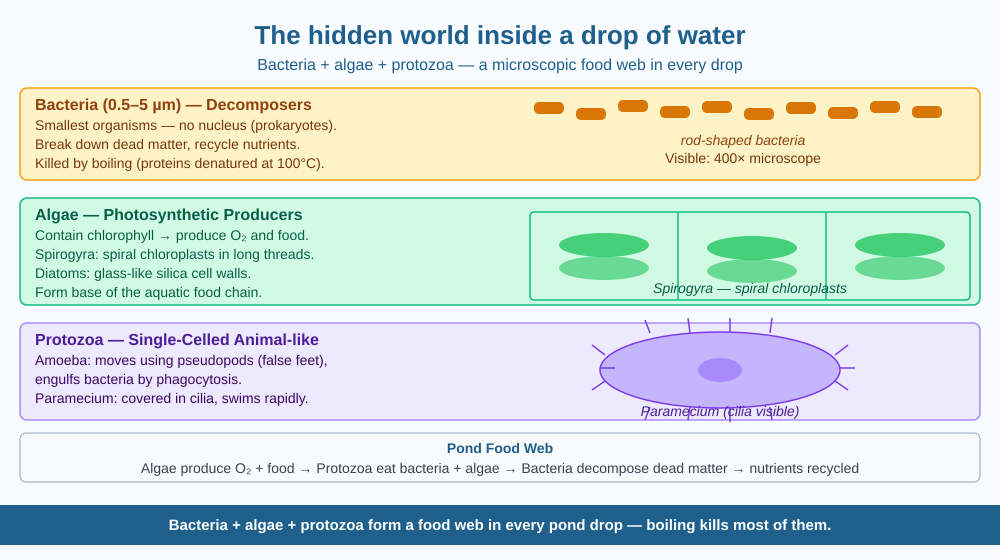

By the end of this lesson, you should be able to name the three main types of microorganisms found in pond water, describe what each type does, and predict what happens to them when water is boiled.
A single drop of water from a pond looks completely clear. Hold it up to the light — nothing visible. But place that same drop on a microscope slide and magnify it even 100 times, and you are looking at a bustling city of living things, some of which are hunting, others fleeing, and others quietly making their own food using sunlight.
A single drop of pond water (about 0.05 mL) can contain thousands of microscopic living organisms. They belong to three main groups:
1. Bacteria (0.5–5 micrometres) Bacteria are prokaryotes — single-celled organisms with no nucleus. They are the smallest living things visible through a school microscope at 400× magnification. In pond water, bacteria play a critical role: they decompose dead plant and animal matter, breaking it down into simpler chemicals that enrich the water and feed other organisms. Without bacteria, dead material would just accumulate and pond ecosystems would collapse.
2. Algae (various sizes, up to 100 micrometres) Algae are eukaryotes (cells with a proper nucleus) that contain chlorophyll and perform photosynthesis — exactly like plants. Common pond algae include: - Spirogyra: long green threads with a distinctive spiral chloroplast coiling through each cell - Chlamydomonas: a tiny single cell that uses two whip-like flagella to swim, and has a cup-shaped chloroplast - Diatoms: single cells enclosed in a two-part glass-like shell made of silica, with intricate geometric patterns — beautiful under a microscope
Algae produce oxygen and organic molecules that form the base of the pond food chain.
3. Protozoa (10–300 micrometres) Protozoa are single-celled eukaryotes that move and hunt: - Amoeba: moves by extending blob-like projections called pseudopods (false feet) and wraps around food particles — a process called phagocytosis (cell-eating) - Paramecium: covered in hundreds of tiny cilia (hair-like structures) that beat in coordinated waves to propel it through water at remarkable speed; also uses cilia to sweep food into a mouth-like groove
None of these can be seen with the naked eye. You need a light microscope at 40×–400× to observe them.
The pond drop is a miniature ecosystem with distinct roles: - Algae = producers (make food and oxygen via photosynthesis) - Bacteria = decomposers (break down dead matter, recycle nutrients) - Protozoa = consumers (eat bacteria and algae, controlling their populations)
Remove any group and the system breaks. The clean, clear appearance of the water hides this entire food web operating at the microscopic scale.
The included SVG shows a simulated microscope view of a pond water drop. The circular field of view is divided into three labelled zones:
Below the microscope view, a small food-web arrow diagram shows: Algae → Protozoa → (nutrients back to) → Bacteria → Algae

Some ponds in Indian cities turn bright green in summer — a phenomenon called algal bloom. This happens when excess nutrients (often from agricultural runoff containing fertilisers) enter the water. Algae thrive, multiply explosively, and cover the surface.
Here is the twist: when the bloom is enormous and the algae eventually die, bacteria decompose the mass of dead algae. Bacterial decomposition consumes oxygen. The oxygen level in the water drops so drastically that fish suffocate and die — even though the pond looks "full of life" from the green algae above.
Predict: An algal bloom appears on a village pond. A week later, dead fish are found. Explain, using the bacteria–oxygen connection, how an explosion of plant-like algae could kill animals.
What is found in a drop of pond water that cannot be seen with the naked eye?
Why is identifying the mechanism of what makes water life-supporting more useful than just knowing microbes exist?
If the water in a pond were heated to a very high temperature, what would you predict would happen to the microorganisms?
Explain to a younger sibling — without using "microscope," "bacteria," or "protozoa" — why pond water might make you sick but boiled water won't. Then explain the same thing using all the correct scientific terms. Both explanations should describe the same cause-and-effect chain.
A single millilitre of ocean surface water typically contains about one million bacteria and ten million viruses — and yet the ocean is not a toxic wasteland. These organisms are in balance, keeping each other's populations in check. Viruses in the ocean actually kill so many bacteria that they release nutrients which feed algae — the ocean's viruses are, unexpectedly, partly responsible for the fish we eat.
Bacteria + algae + protozoa form a food web in every pond drop — all invisible to the naked eye. Boiling kills most of them by destroying their cell proteins.